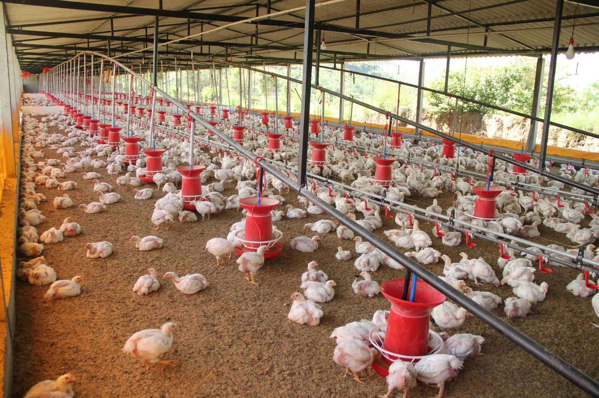
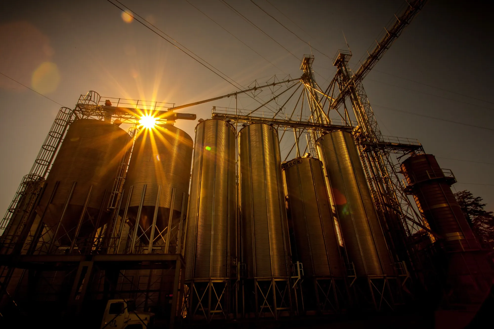

01 / PRODUCCIÓN
Avicultura
Calefacción de galpones y continuidad de los procesos de crianza.
ORZEN ENERGY · CONEXIÓN INDUSTRIAL
Conectamos empresas con soluciones energéticas para sus procesos productivos. Un primer contacto claro, ágil y enfocado en cada necesidad.
SECTORES PRODUCTIVOS
Entendemos que cada operación tiene requerimientos distintos. Nuestro trabajo comienza por identificar la necesidad y conectar con el equipo especializado.

Calefacción de galpones y continuidad de los procesos de crianza.

Necesidades energéticas vinculadas al acondicionamiento y secado de granos.
Evaluación inicial para operaciones que requieren suministro energético.
SOLUCIONES
Desde una necesidad de GLP a granel hasta la coordinación de una evaluación especializada, facilitamos el contacto entre tu establecimiento y proveedores del sector.
NUESTRO ENFOQUE
Compartís tu actividad, ubicación y necesidad energética.
Revisamos la información inicial y la disponibilidad de atención.
Coordinamos el contacto con el equipo comercial y técnico correspondiente.
HABLEMOS DE ENERGÍA
Dejanos los datos de tu establecimiento. Nos comunicaremos para conocer tu necesidad y evaluar los próximos pasos.
ORZEN Energy es un servicio independiente de vinculación y desarrollo comercial. La evaluación técnica, cotización, suministro e instalación corresponden al proveedor especializado.